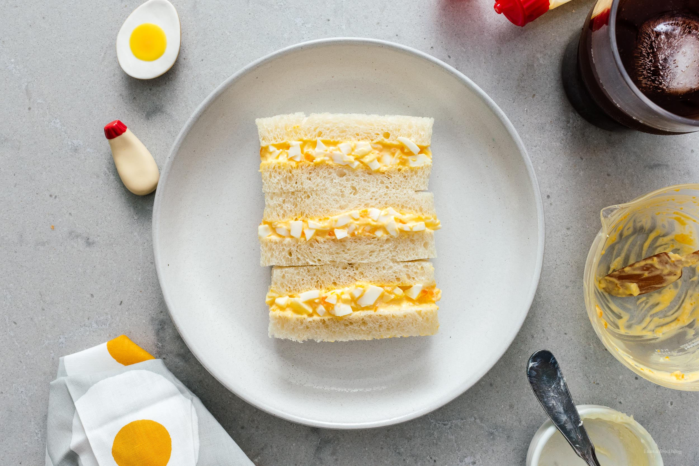

how to make an egg sandwich

description
in this recipe i will be showing you how i make an egg sandwich
during this process you will also learn my secret method of boiling the perfect eggs... which you will then be using to make said sandwich
ingredients
- 2 eggs (refrigerated)
- 2 slices of bread
- soya sauce
- white pepper
- kewpie mayo
steps
- place eggs gently into a pot and fill it with water
- place pot on stove and heat until boiling
- allow eggs to remain in boiling water for another 6 minutes
- turn stove off, remove eggs from pot and place under running water
- remove shell from eggs and place into bowl
- at this point you can use a fork to break open the eggs, you should have a molten lava type yolk (wonderful)
- add dash of soya sauce and white pepper to taste. add mayo
- mash with fork to desired consistency
- spread eggs onto bread
- eat!!